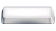

En vue vignette
//Déplacement vers le haut dans la grille d'image
/Déplacement vers la droite dans la grille d'image
/Déplacement vers le bas dans la grille d'image
//Déplacement vers le bas dans la grille d'image
Vue one-page de l'image sélectionnée
Page de miniatures suivante
+Page de miniatures précédente
+MODE URGENCE !!!!!
En vue one-page
Entrer en mode zoom
//En mode zoom, monter dans l'image
/En mode zoom, descendre dans l'image
/Image suivante
//Image précédente
+MODE URGENCE !!!!!